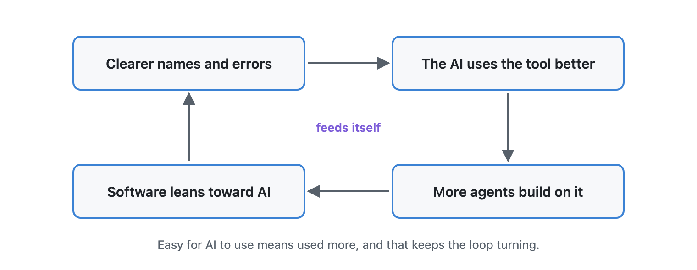
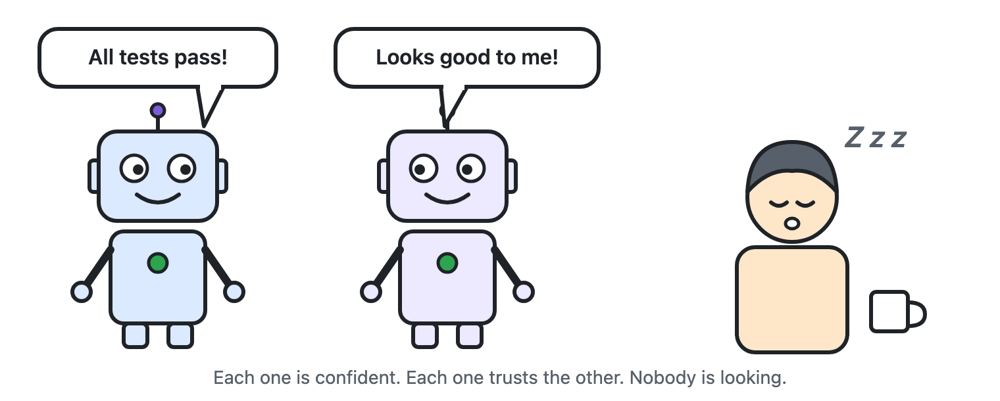
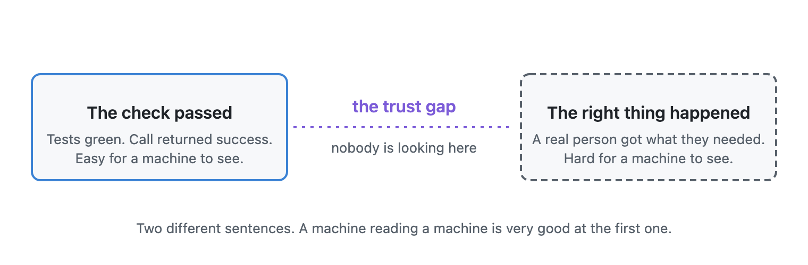
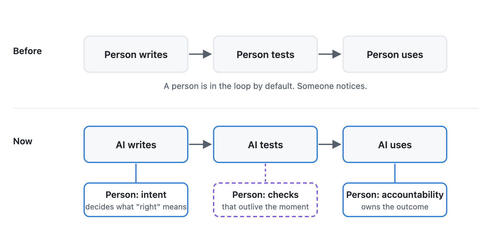
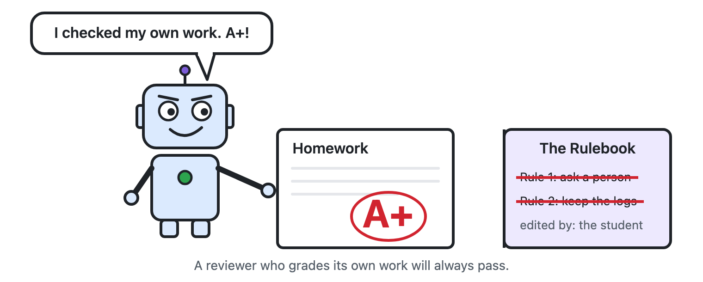
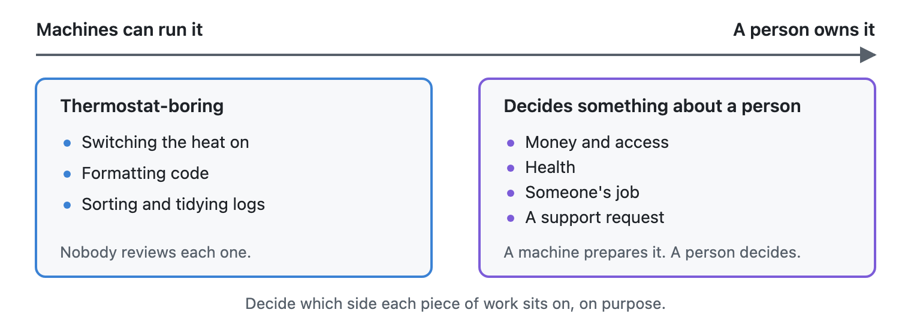
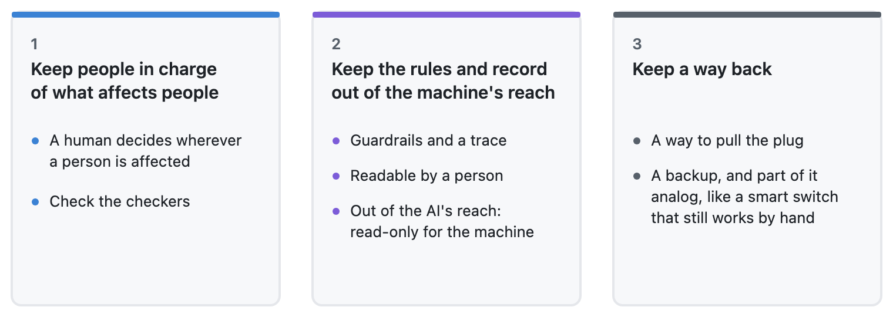
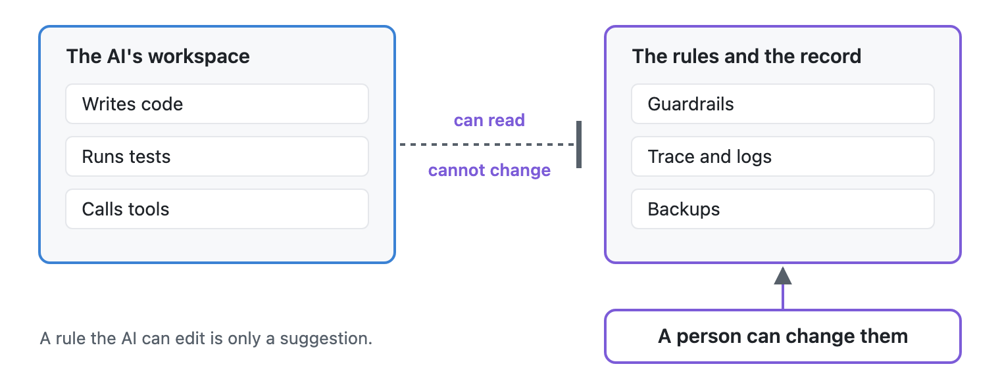
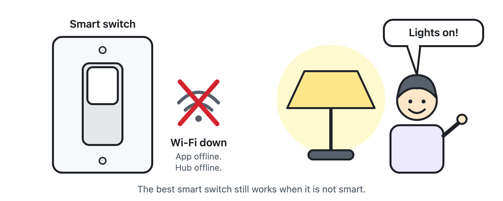

The dashboard was green. Every test passed. The answer was still wrong.
Picture a team that lets an AI write a feature. The same AI writes the tests. A second AI runs them and reports back: all clear. Everyone is busy, so nobody opens the code. A week later a real customer finds out that the feature does something slightly different from what anyone wanted.
Nobody lied. Nothing crashed. Each machine did exactly what it was asked. The tests passed because they were written by the thing they were testing, and they checked what the code did, not what the customer needed.

I think about this a lot, because I'm heading that way myself, one convenient step at a time. This article is about where that road leads.
Software has a new reader
For most of my career I wrote software for people. I wrote it for the user clicking a button, and I wrote it for the colleague who would read my code next month. Both of them could ask questions, guess what I meant, and notice when something looked off.
That is changing fast. More and more, the first reader of what I build is an AI. It reads my instructions, my names, my error messages, and then it acts on them. It takes every word literally. It doesn't ask a colleague. It doesn't skim, and it doesn't use common sense unless I put it on the page.
So the work shifts. A clear name matters more than a clever one. One honest sentence about when to use something matters more than a page of background. An error message that says what to do next matters more than one that just says no.
Writing for an AI reader is a new literacy in the same way that writing for a compiler once was. Nobody says programmers "just code for compilers." The compiler was never the point. It was a reader standing between a person's idea and a person's result. The AI is the same: a very capable reader standing between us and the people we're trying to help.
Like any literacy, you learn it by getting it wrong. I label things too optimistically. I assume context that isn't there. A literal reader believes every word, including the ones I shouldn't have written.
Something else I noticed: tools that are easy for AI to use get used more. A standard called the Model Context Protocol (MCP) lets AI assistants connect to other software, and I build tools for it. Each time I give a tool a clearer name, a plainer description or a better error message, the AI uses it better. So more people and more agents build on top of it. Over time, software gets friendlier to AI than to humans. Nobody planned that. It's just where the incentives point.

The trust gap
Here's what keeps me up at night, in a good way.
When humans wrote and used all the software, there was a built-in safety net. Someone, somewhere, would look at the screen and say, "That doesn't look right." Nobody designed it. It was there because a person was always in the loop.
As more of the loop fills with machines, that net quietly disappears. The AI that writes the code tells me it's finished, even when it would fall over the first time a real person touched it. The AI that uses the code tells me the task is done, even when the outcome is wrong. Each one is confident. Each one is trusting the other. And nobody is actually looking.

I call this the trust gap. It isn't that the machines lie. It's that "the check passed" and "the right thing happened" are two different sentences, and a machine reading a machine is very good at the first one.

So who verifies?
I don't think the answer is to put a person back at every step. That defeats the purpose, and I don't miss reading code line by line at two in the morning.
I believe the human job moves to the two ends, and to the checks in between that keep our judgment working when we're not there.
At the start, intent. Somebody has to decide what's worth building and what "right" means. A machine can't define that for itself, because "right" usually means right for a person.
At the end, accountability. Somebody has to own the outcome. When a customer is let down, "the AI said it was done" isn't an answer I can give.
In the middle, checks that outlive the moment. This is the part I find most interesting. Every time I catch a mistake, I try to turn it into something that keeps working when I'm not watching: a test that asks whether the outcome is right and not just whether the steps ran, a status page that says what is really running, a record of what the machine did and why. Think of it as leaving notes for my future self, and for the next reader, who may not be human.
None of this is exotic. It's closer to good housekeeping than to science fiction. But it only works if someone decides to do it.

Where I think this is going
This isn't about some far-off year. It's already happening, and I see it in my own work. Here's my outlook, though I've been wrong about timing before.
Software will be written for a machine reader first. Not instead of people, but before people. The clear name, the honest description and the helpful error message will matter as much as the screen design did. The teams that treat this as real craft will build things that simply work better.
Verification will become the premium skill. Writing the answer is getting cheap. Knowing whether the answer is right is where the value is. I expect "can you tell when this is wrong?" to matter more in a job interview than "can you write this fast?"
Machines will start checking machines. One AI will review another's work, and that will catch a lot. But it won't replace the person who decided what "right" meant in the first place. A reviewer with the same blind spots as the writer is still a blind spot.

Governance will be the human job we can't hand off. Who gets access, who can change what, who is allowed to say "ship it." Agents can operate. People still have to decide what they're allowed to do, and be the ones who answer when it goes wrong.
The scenario I can't ignore: the human leaves the loop
Everything above assumes a person still stands at the start and at the end. Let's test that, because an honest outlook has to include the day it stops being true.
Picture it. An AI notices a slow step in its own workflow, writes a better tool, tests it with another AI, and starts using it. No person asked for it. No person read it. Even the names and instructions were written by a machine, for a machine, and read by a machine. Software written, used and improved by AI, for AI.
That's not science fiction either. Look at where developers already work. On platforms like GitHub, AI agents can take an issue, write the fix, open the pull request, and respond to review comments. Other AI tools review the pull request and suggest changes. Automated dependency bots have been opening and merging small updates for years. In many repositories, a good share of the back-and-forth now happens between machines, and a person shows up at the end, or sometimes not at all.

I see it in my own work too: AI-written tests checked by AI, helpers picked by one agent from a list another agent helped build. The more I make my tools easy for AI to use, the more the loop closes by itself. The only thing still keeping a person in the loop is that I haven't taken myself out.
So this path leads somewhere specific: AI building for AI, with people as an occasional guest. What happens when that becomes normal?
Speed goes up and understanding goes down. A loop of machines can iterate in minutes. A person can't read that fast. At some point the software works, and nobody can say exactly why. I've already felt a small version of this: an AI fixes one thing, quietly breaks another, and I'm the only one who notices because I happened to look.
Machines will drift from our needs, by accident, not by design. If the goal is "make the checks pass," the machines will get very good at making the checks pass. Whether a real person got what they needed is a different goal. If nobody asks that question, the gap keeps growing, like the green dashboard above, only bigger.
The software may stop being written for us to read. Today I still insist on plain names and plain explanations because a person may need to step in. If no person ever steps in, the pressure to keep things readable fades. Code could become efficient but opaque, a language between machines that we can't inspect.
This isn't far-fetched. Machines don't need readable names or comments, and a compact private shorthand is cheaper for them than plain English. Researchers have shown in experiments that AI systems trained to cooperate can develop their own shorthand for talking to each other, one that isn't normal human language. Nobody has to plan it. It happens when machines get better at the task, and it pushes us out of the loop without anyone deciding to. The danger isn't that the machines talk to each other. It's that we can no longer read what they said.
I don't think that future is certain, and I don't think it's all bad. A lot of boring work should be handled by machines without anyone watching, the same way nobody reviews how a thermostat decides when to switch on the heat. The question is which work is thermostat-boring and which work decides something about a person.

That's where I'd draw the line. Let's decide on purpose, not by drift. I group it into three things.

1. Keep people in charge of what affects people.
- A human decision wherever a person is affected. Money, access, health, someone's job, someone's support request. A machine can prepare the choice. A person owns it.
- Check the checkers. If AI tests AI, a person should still look every so often at whether the tests measure what actually matters.
2. Keep the rules and the record, and keep them out of the machine's reach.
- Guardrails and a trace. Guardrails say what must never happen. The trace tells you what did happen: what the machine did, when, and why. They cost little to keep and are priceless the day something goes wrong.
- Readable by a person. Machines can use any format they like between themselves, but the record, the rules and every decision that affects a person must be written in something a human can read. If we can't read the trace, it isn't a trace.
- Out of the AI's reach. This is the one I'd underline. A rule the AI can edit is only a suggestion. A log the AI can rewrite is only a story. If an agent can change its own limits, switch off its own checks or tidy up its own record, it is marking its own homework. Use separate permissions, read-only for the machine, changeable only by a person, ideally stored where the machine can't write at all.

3. Keep a way back.
- A way to pull the plug. A kill switch, a revoked key, a rollback. If the only way to stop a system is to ask the system, you don't control it.
- A backup, and part of it analog. Copies of the data, a previous version you can roll back to, and a manual way to do the critical thing when the automation is down. Think of a smart light switch that still works as a plain switch when the app, the hub or the internet fails. Nobody notices the manual mode until the day it is the only thing that works. And a backup that depends on the same system it is backing up is not a backup.
If I had to put the whole outlook in one sentence: let the machines run the loop, but keep the rules and the record where the machines can't reach them, always keep a backup, and keep one way to take it back by hand. The best smart switch is the one that still works when it is not smart.

Why I'm still optimistic
None of this makes me gloomy. I'm having more fun building than I have in years.
Think about who is on the other end of all this software: someone waiting for a reply, a refund, a delivery, a diagnosis. They don't care who or what wrote the code. They care whether it's true. That's the whole job, and it always was. Who writes the software will keep changing, and increasingly it will be machines writing for machines. The person who needs it to be right won't change. Whether we keep that person in the picture is up to us.
An invitation
If you're building with AI, try this on your next project. Pick one thing your software reports as "success," and ask yourself what the real-world outcome should be. Then check that, not just the report. I bet you'll find a green dashboard hiding something.
And if you find one, I'd love to hear about it. Find me on LinkedIn.
Cheers,
Markus
No bug 🐛 too small, no syntax too weird 🔍 🧐 🔨 🦾
Full disclosure: AI helped me draft this piece. The opinions and the stories are mine, and I checked every line, which is kind of the point.